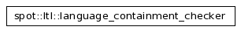

Main Page
Modules
Namespaces
Classes
Files
Directories
Related Pages
Class List
Class Hierarchy
Class Members
spot Graphical Class Hierarchy
Go to the textual class hierarchy

Please
comment
this page and
report errors
about it on
the RefDocComments page
.
Generated on Tue Jul 17 15:14:08 2007 for spot by
1.5.2
 1.5.2
1.5.2